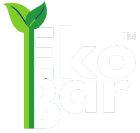
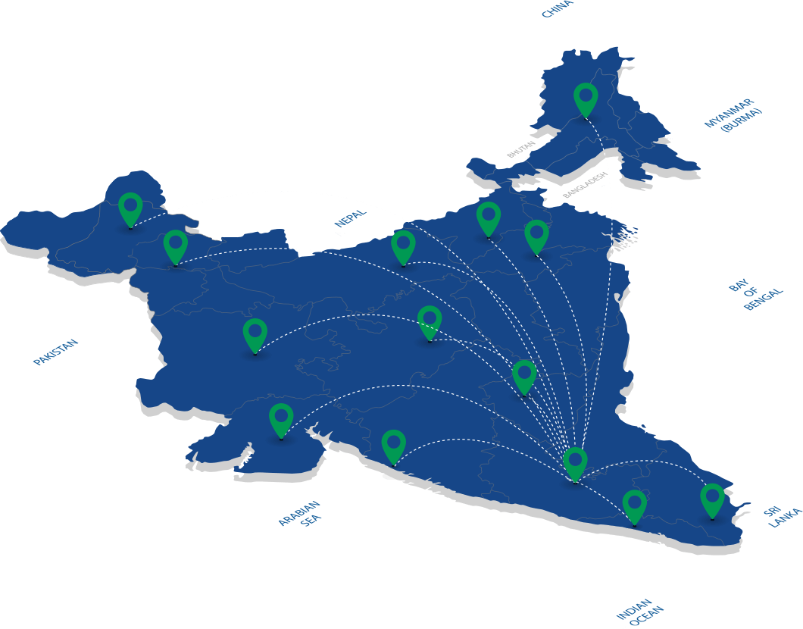

Why settle for Steel TMT when you can use
Ekobar
GFRP



Characteristics
STEELVS
EKOBAR GFRP| Property | Steel TMT Rebars | EkoBar GFRP Rebars |
|---|---|---|
| Density (Kg/m³) | 7850 | 1900 |
| Tensile Strength (MPa) | Up to 650 | 1000+ |
| Shear Strength (MPa) | 120 | 170 |
| Bond Strength (MPa) | 14 | 12.5 |
| Compression (MPa) | 500 | 450 |
| Modulus of Elasticity (GPa) | 160-200 | 65 |
| Elongation (%) | 25 | 4 |
| Weight | 100% | 25% |
| Corrosion Resistance | Low | High |
| Alkaline Resistance | Low | High |
| Service Life | 40–50 years | 80+ years |
75% lighter than steel
30% economical than steel
Logistics
What truly sets us apart is not just our product quality, but our seamless supply chain and logistics efficiency. With a robust in-house fleet and a well-connected distribution network, we guarantee on-time delivery across Karnataka and all over India. With excellent road, port, and industrial connectivity, EkoBar is trusted by infrastructure majors and local contractors alike—for speed, scale, and unwavering quality.
